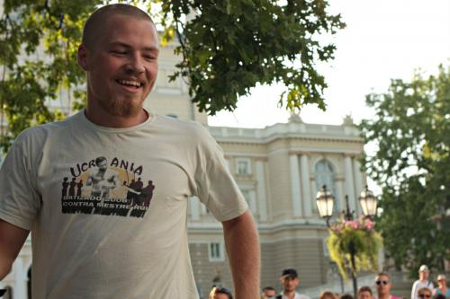

Подсмотрели в Одессе на семинаре с Contra Mestre Veo.
Здравствуйте, товарищи! Недавно мы с Сетом вернулись из замечательной Одессы, а теперь всё ходим, и ревем, и рвемся обратно, потому что там было очень хорошо)
Поскольку отдельная тема по семинару есть, все заново описывать не буду. Утренние тренировки очень-очень ранние, но если выпить чашечку кофе (жалко, что Львовская кофейня на Дерибасовской открывается только в 10 — там бодрящий кофе по-турецки) и довезти тело до моря — становится хорошо и беззаботно. Вечерние тренировки в заброшенной школе в маленьком зале с видом на заросшую выложенную плиткой террасу в духе «Алисы». А ещё все признали, что Вео — добрый и вежливый, и удивились — бразилец же, как так. А люди там все как будто твои старые друзья. Я не понимаю, как это). В общем, чтобы не начать пускать слюни, вот вам немного одесской фотоблагости).



И внезапно
Вот так среди зрителей оказался Майкл Мэдсен. Постоял, посмотрел, и пошел. Тут уж было не до роды, побежала делать мильон снимков. Так что если кому-то нужно фото Мэдсена с хорьком, обезьянкой или ещё кем — пишите, порадую вас. А пока трепещите — Мэдсен с женой, вроде бы беркутом и голубками.
И напоминаю, что Вео следит за Вами. Спасибо Всем, кто приютил и развлекал, Сергею за постоянные развозы и соки, и Жорику отдельное спасибо, потому что отдал нам кровать и спал в гамаке на балконе (это чертовски неудобно).